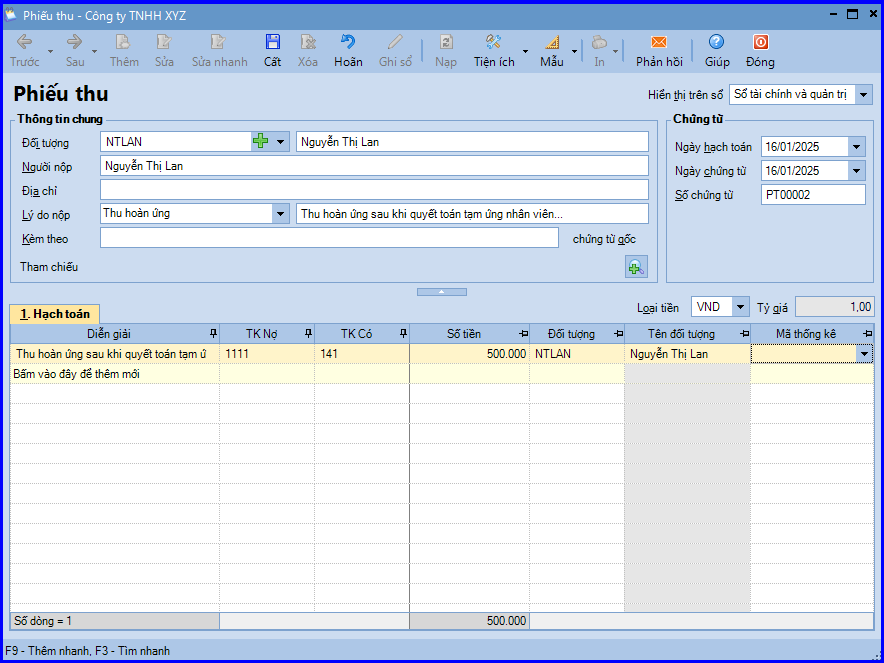
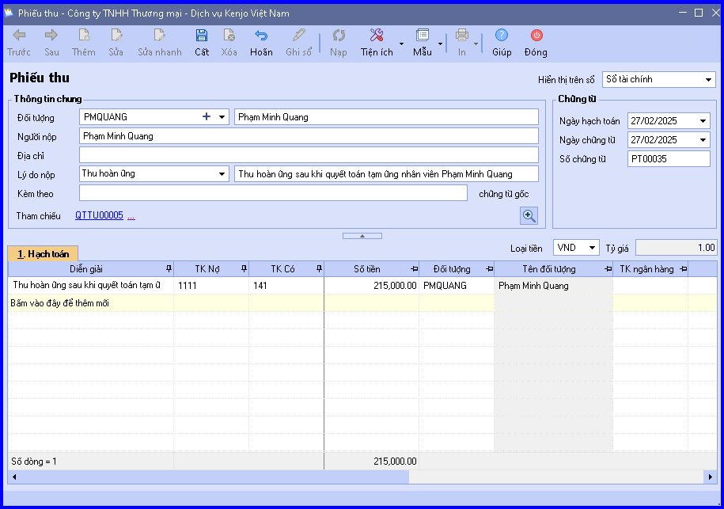

Hướng dẫn cách hạch toán ghi sổ các nghiệp vụ Thu hoàn ứng bằng tiền mặt sau khi quyết toán tạm ứng nhân viên trên phần mềm Misa
Sau khi đã chuẩn bị đủ các chứng từ, hoá đơn, nhân viên thực hiện các thủ tục quyết toán tạm ứng, khi đó bộ phận kế toán thường phát sinh các hoạt động sau:
-
Kế toán thanh toán kiểm tra và xác nhận các khoản chi tiêu theo đúng mục đích và quy định của công ty.
-
Kế toán trưởng và Giám đốc ký duyệt quyết toán tạm ứng
-
Căn cứ vào các hóa đơn, chứng từ, nếu số tiền tạm ứng lớn hơn số tiền đã chi, kế toán thanh toán thực hiện lập Phiếu thu để nhập quỹ số tiền thừa từ người nhận tạm ứng.
-
Nhân viên ký Phiếu thu và nộp tiền. Còn thủ quỹ căn cứ vào Phiếu thu để thu tiền, đồng thời ghi sổ quỹ
-
Kế toán thanh toán căn cứ vào Phiếu thu có chữ ký của thủ quỹ và người nộp tiền để ghi số kể toán tiền mặt.
1. Cách định khoản hạch toán Thu hoàn ứng bằng tiền mặt sau khi quyết toán tạm ứng nhân viên:
-
Nợ TK 111 - Tiền mặt (1111, 1112)
-
Có TK 141 - Tạm ứng
2. Các bước hạch toán ghi sổ nghiệp vụ Thu hoàn ứng bằng tiền mặt sau khi quyết toán tạm ứng nhân viên trên phần mềm Misa
- Cách 1: Lập phiếu thu hoàn ứng bằng tiền mặt
+ Vào phân hệ "Quỹ" => chọn tab "Thu, chi tiền" => chọn chức năng "Thêm/Thu tiền".
+ Chọn lý do nộp là "Thu hoàn ứng".
+ Chọn lý do nộp là "Thu hoàn ứng".

+ Khai báo thông tin chứng từ, sau đó ấn "Cất".
+ Chọn chức năng "In" trên thanh công cụ, sau đó chọn mẫu phiếu thu cần in.
+ Chọn chức năng "In" trên thanh công cụ, sau đó chọn mẫu phiếu thu cần in.
- Cách 2: Lập phiếu thu tiền mặt số tiền thừa khi quyết toán tạm ứng
+ Trên Chứng từ quyết toán tạm ứng => vào "Tiện ích" => chọn "Lập phiếu thu/chi tiền mặt số tiền thừa/thiếu" để hạch toán số tiền thu hoàn ứng từ nhân viên.
+ Chương trình tự động hiển thị giao diện phiếu thu tiền mặt tương ứng.
+ Chương trình tự động hiển thị giao diện phiếu thu tiền mặt tương ứng.

+ Kiểm tra chứng từ và ấn "Cất".
CHÚ Ý:
- Trường hợp Thủ quỹ có tham gia sử dụng phần mềm, sau khi phiếu thu hoàn ứng được lập, phần mềm sẽ tự động sinh ra phiếu thu trên tab "Đề nghị thu, chi" của Thủ quỹ. Thủ quỹ sẽ thực hiện ghi sổ phiếu thu vào sổ quỹ.
- Trước khi hạch toán nghiệp vụ thu hồi tạm ứng của nhân viên, cần thực hiện nghiệp vụ chi tạm ứng trên phân hệ "Quỹ" => chọn tab "Thu, chi tiền" => chọn "Chi tiền" và nghiệp vụ quyết toán tạm ứng trên phân hệ "Tổng hợp" => chọn tab "Chứng từ nghiệp vụ khác/Quyết toán tạm ứng".
KẾ TOÁN DIỆU TÂM chúc các bạn làm tốt!
=============================
Nếu bạn muốn thành thạo các kỹ năng làm kế toán trên phần mềm Misa
Thì bạn có thể tham khảo "Khóa Học Thực Hành Kế Toán Trên Phần Mềm Misa" tại Công ty đào tạo Kế Toán Diệu Tâm
Trong khóa học này, bạn sẽ được dạy cách lên sổ sách, lập báo cáo tài chính trên phần mềm Misa
Chi tiết về chương trình đào tạo bạn xem tại đây nhé: Khóa học thực hành kế toán trên Misa
=============================
=============================
Nếu bạn muốn thành thạo các kỹ năng làm kế toán trên phần mềm Misa
Thì bạn có thể tham khảo "Khóa Học Thực Hành Kế Toán Trên Phần Mềm Misa" tại Công ty đào tạo Kế Toán Diệu Tâm
Trong khóa học này, bạn sẽ được dạy cách lên sổ sách, lập báo cáo tài chính trên phần mềm Misa
Chi tiết về chương trình đào tạo bạn xem tại đây nhé: Khóa học thực hành kế toán trên Misa
=============================